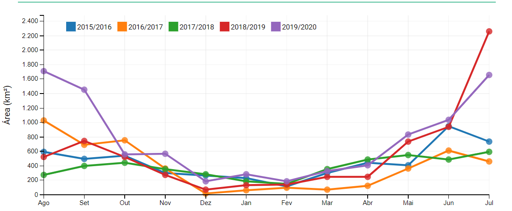
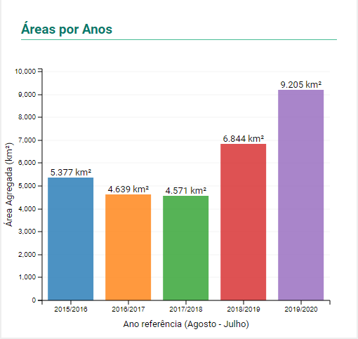
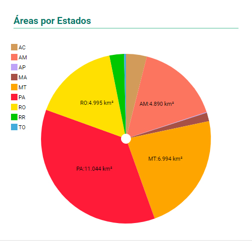

Mais informações sobre os níveis de desmatamento da Amazônia



Os dados são do programa Deter, um sistema rápido de monitoramento, baseado em imagens de satélite de média resolução, projetado para detectar desmatamentos “em tempo real” e alertar as autoridades sobre possíveis ilícitos ambientais em andamento. Apesar de não ser ideal para cálculos de área, ele serve como um ótimo “termômetro” da evolução do desmatamento no tempo e no espaço.
As taxas “finais” de desmatamento, por sua vez, são calculadas por um outro sistema, chamado Prodes, também desenvolvido pelo Inpe, que utiliza imagens de alta resolução para mapear em detalhes tudo o que foi desmatado ao longo de cada ano na Amazônia. O Prodes produz um relatório anual, enquanto o Deter tem seus dados atualizados semanalmente na plataforma TerraBrasilis.